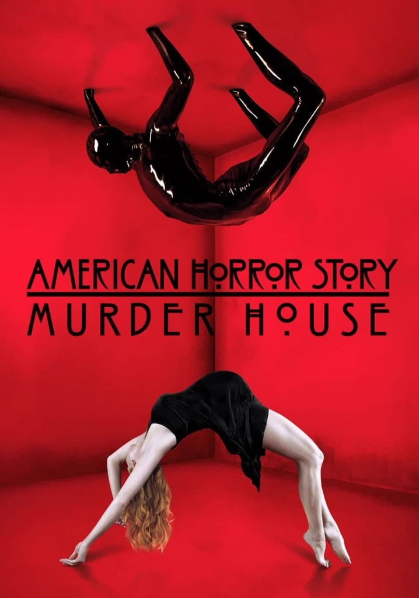
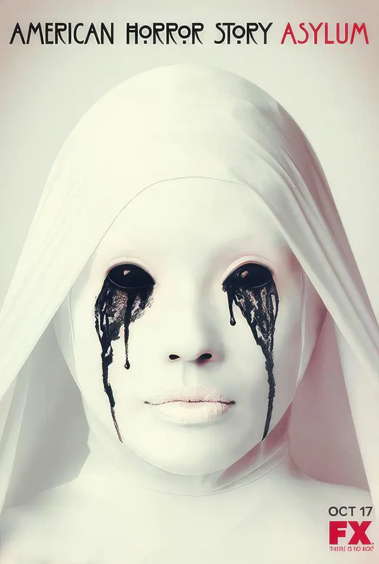
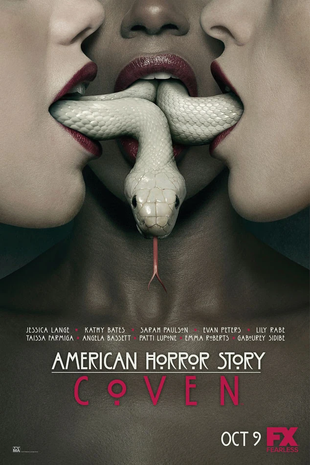
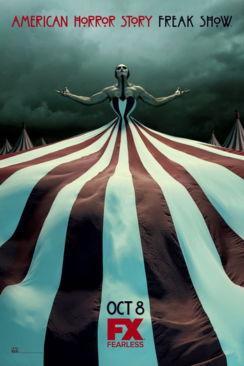
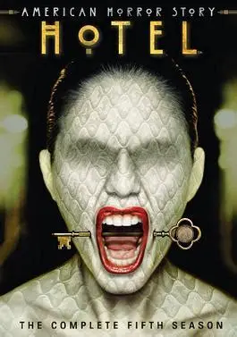
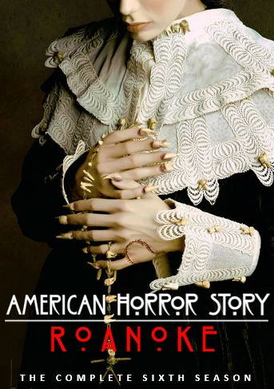
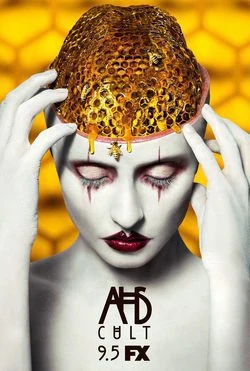
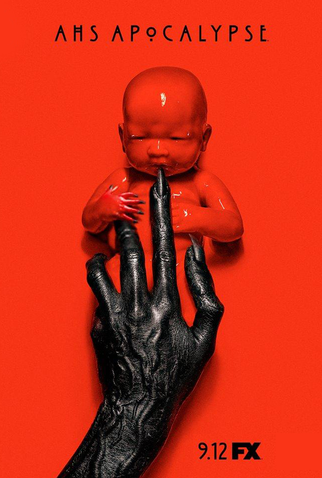
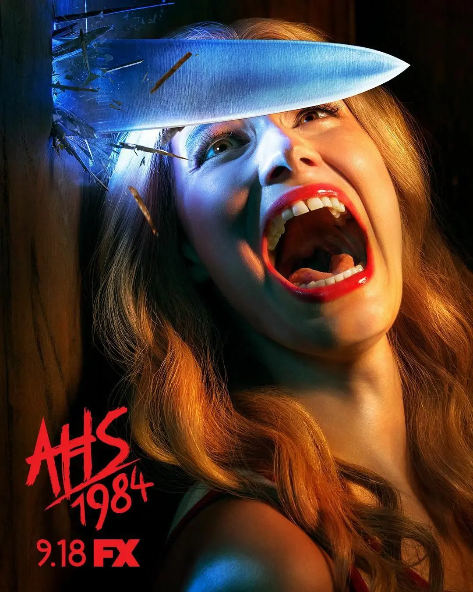
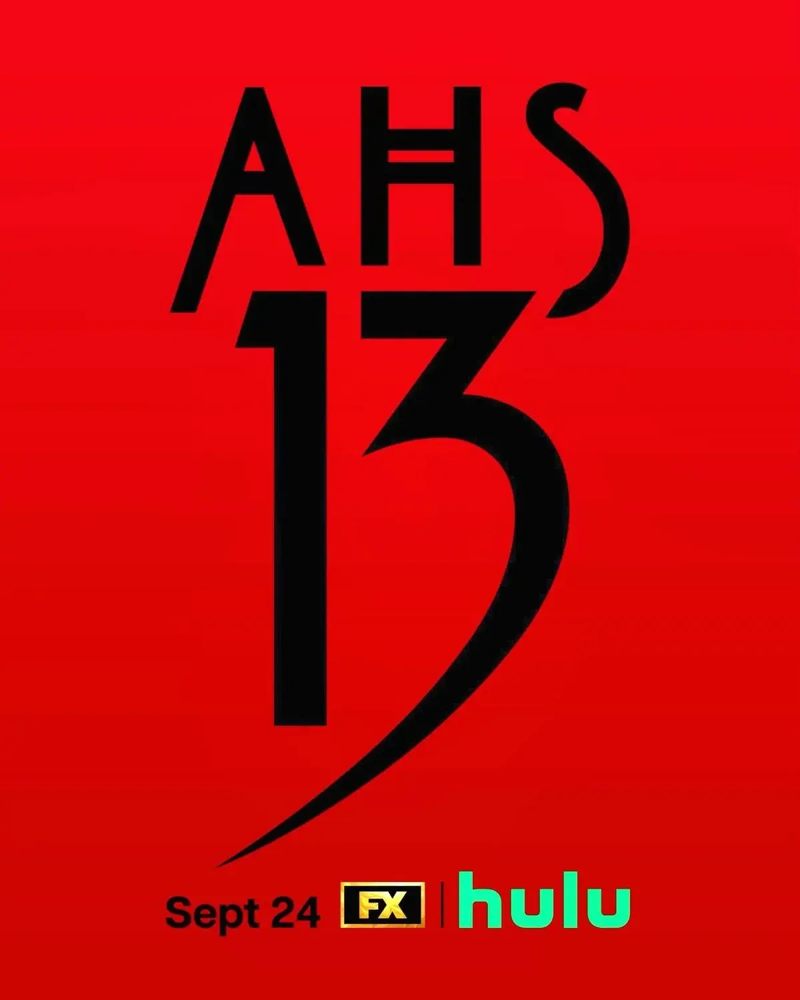

Temporada 1 — Murder House (2011)
La primera temporada sigue a la familia Harmon, que se muda a una antigua casa en Los Ángeles sin saber que está marcada por una historia de muertes y sucesos sobrenaturales. A medida que descubren los secretos de la casa, sus habitantes comienzan a quedar atrapados en ella.

Temporada 2 — Asylum (2012)
La historia transcurre en Briarcliff, una institución psiquiátrica dirigida por religiosas durante la década de 1960. Entre pacientes, médicos y autoridades, la temporada combina horror psicológico, religión, violencia y fenómenos sobrenaturales.

Temporada 3 — Coven (2013)
La tercera temporada se centra en un aquelarre de brujas que viven en una academia de Nueva Orleans. Mientras las jóvenes aprenden a controlar sus poderes, también deben enfrentarse a conflictos internos y a antiguas amenazas.

Temporada 4 — Freak Show (2014)
Ambientada en la década de 1950, la historia sigue a un grupo de artistas de un circo de fenómenos que llega a un pequeño pueblo de Florida. Mientras intentan mantener el espectáculo, una serie de asesinatos comienza a poner en peligro al grupo.

Temporada 5 — Hotel (2015)
La temporada se desarrolla en el misterioso Hotel Cortez de Los Ángeles, un lugar donde ocurren extraños acontecimientos y del que parece imposible escapar. La historia combina asesinatos, criaturas sobrenaturales, obsesiones y secretos del pasado.

Temporada 6 — Roanoke (2016)
Una pareja se muda a una casa aislada en Carolina del Norte, donde comienzan a experimentar sucesos inexplicables. La temporada presenta la historia mediante un formato de falso documental que luego cambia de perspectiva y revela nuevos acontecimientos.

Temporada 7 — Cult (2017)
Después de las elecciones presidenciales de 2016, una serie de acontecimientos hace que el miedo y la paranoia comiencen a apoderarse de una comunidad. La temporada explora la manipulación, el fanatismo y la formación de un peligroso culto.

Temporada 8 — Apocalypse (2018)
Un apocalipsis nuclear transforma el mundo y deja a un grupo de sobrevivientes refugiados en un misterioso lugar. La temporada retoma personajes y acontecimientos de temporadas anteriores y conecta especialmente las historias de Murder House y Coven.

Temporada 9 — 1984 (2019)
En 1984, un grupo de jóvenes comienza a trabajar como monitores en el campamento Redwood. Lo que parecía ser un verano tranquilo se convierte en una pesadilla cuando comienzan a ocurrir una serie de asesinatos.
Temporada 10 — Double Feature (2021)
Esta temporada se divide en dos historias diferentes. Red Tide sigue a un escritor que llega a un pequeño pueblo costero y descubre un extraño secreto, mientras que Death Valley se centra en acontecimientos relacionados con extraterrestres y conspiraciones.
Temporada 11 — NYC (2022)
La historia se desarrolla en Nueva York durante la década de 1980. La aparición de una serie de asesinatos y desapariciones lleva a un grupo de personajes a investigar una amenaza que se extiende por la ciudad.
Temporada 12 — Delicate (2023)
Una actriz que intenta quedar embarazada comienza a experimentar situaciones extrañas y perturbadoras mientras su carrera profesional avanza. A medida que su embarazo progresa, empieza a sospechar que alguien o algo está intentando controlar su vida.
PRÓXIMAMENTE - 24 DE SEPTIEMBRE 2026

Temporada 13
La temporada 13 de American Horror Story fue confirmada por FX, pero todavía no se conocen todos los detalles de la historia. La nueva temporada continuará con el formato de antología de la serie, presentando una nueva historia de terror y una identidad propia.